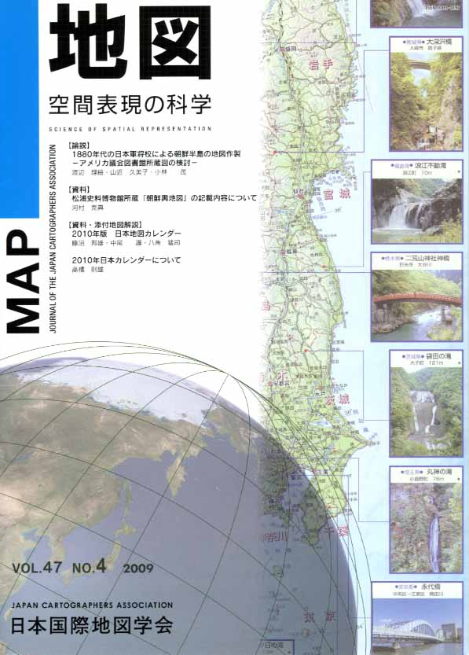
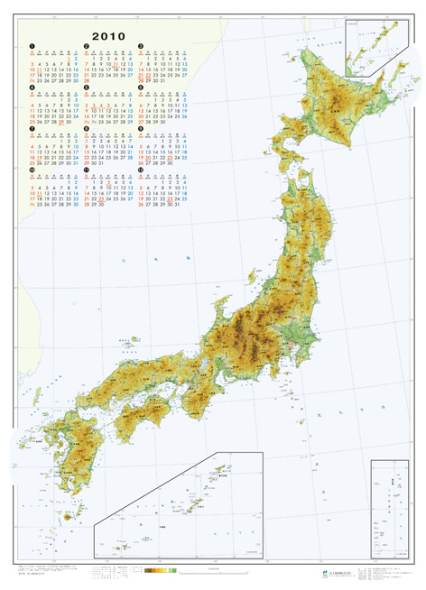

≪No.47 No.4 添付地図≫

本図を許可なく複製・利用することを禁止します。
| 最 新 号 | バックナンバー | 添付地図目録 | 投 稿 規 程 |
Vol.47 No.4 （通巻１８８号） ２００９年
| 【論説】 | 1880年代の日本軍将校による朝鮮半島の地図作製−アメリカ議会図書館所蔵図の検討− | 渡辺理絵・山近久美子・小林 茂 |
| キーワード：1880年代、朝鮮半島、手書き地図、陸軍将校、地理情報、アメリカ議会図書館、外邦図 | ||
| 【資料】 | 松浦史料博物館所蔵「朝鮮輿地図」の記載内容について | 河村克典 |
| キーワード：朝鮮時代初期、朝鮮図、地図編纂事業、松浦史料博物館、朝鮮輿地図 | ||
| 【資料・添付地図解説】 | 2010年版 日本地図カレンダー | 藤沼邦雄・中尾 護・八角猛司 |
| 2010年日本カレンダーについて | 高橋則雄 | |
| 【特別会員のページ】 | 株式会社小学館 | |
| 株式会社中央ジオマチックス | ||
| 【年間総目次】 | ||
| 【学会記事】 | ||
| 【添付地図】 | 2010年版 日本地図カレンダー（国土地図株式会社） | |
| 2010年日本カレンダー（株式会社武揚堂） | ||
|
≪No.47 No.4 表紙≫ |
|
|  |
|
|
|
≪No.47 No.4 添付地図≫ |
| 
本図を許可なく複製・利用することを禁止します。
|